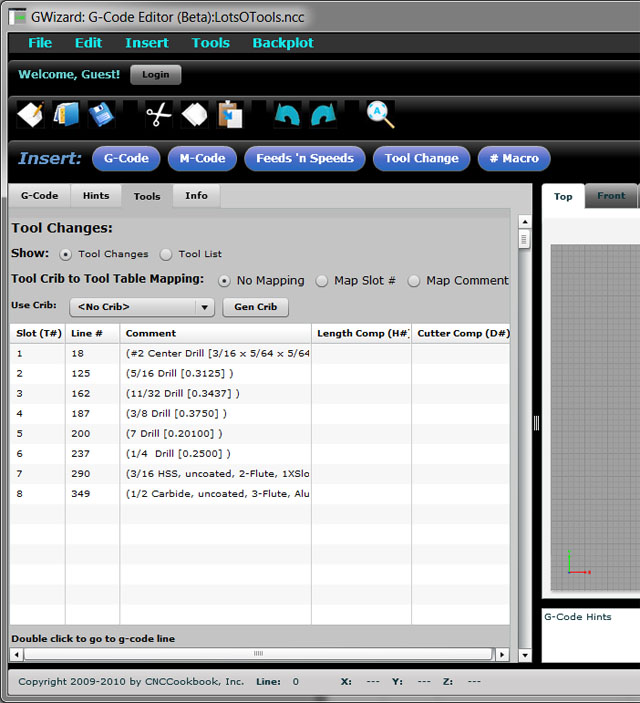

Tool Management for CNC (Part 2 on Tool Length Offsets)
If you haven't already, check out Part 1 for a refresher on Tool Length Offsets.
Getting Organized and Systematic About Tool Management
How does one get their Tool Management organized? Remember, you have to manage this data both from the standpoint of the Shop Floor and the Design Office, even if you have a small business and the two share the same desk. The two generally have slightly different concerns. In the Design Office, its a matter of making sure you have access to what tooling is available on the Shop Floor as the CAM work is being done. You don't want to specify tooling your Shop Floor doesn't have. On the other hand, the Shop Floor is going to be more worried about all the details needed to make sure the job comes off accurately and efficiently. That involves a lot more than just knowing what tooling is available, because you want to optimize your setup time. Therefore, you also have to keep up with all the offset data and make sure its loaded into the machine correctly so it knows what to do with the tools in its changer.
The first step is to standardize what you're doing in terms of offsets, as was mentioned in Part 1. The second step is have a system for managing the information. That system can range from some means of record keeping to some fixed process and even involve both. Any such system should make it easy for you to look back over some history and see how to optimize further. For example, which tools are you most commonly using? Can that information lead to a notion of standardizing some of the slots in your toolchanger across all machines? You'll want to leave some slots open for job-specific tooling, but what is the optimal split between standard slots and special slots, and which tools should you put into your standard slots?
At the simplest level, your machine controller's tool table is your record keeping system. But that's probably also the least efficient and most error-prone approach. To offset that, if you're going to use the controller, you should have a touch setter, and use it every time you load a new tool in the changer so that the controller's information stays up to date. If you're trying to keep up with it through manual data entry on the controller, that's asking for trouble, not to mention being time inefficient. The other issue is your machine controller isn't keeping the historical data you need to make other critical decisions, so even if you choose to have it be the source of truth for tool offsets, you're still going to need more.
A step up would be a tagging system. As soon as a tool goes into a tool holder, you measure the offsets with your tool presetter and record them on a tag, which is then attached to the tool. Before launching into more discussion of managing your tool data, let's detour to talk about methods of tagging tools and tool presetting.
Labelling and Barcoding Tools
In order to reliably tell one tool apart from another, you need some kind of labeling system.
There are a number of different approaches to labeling tools (or to be more precise, labeling a toolholder and its tool) including:
- Sharpie: Get out your marker and write its serial numbers and offsets right on the toolholder.
- Tags: Various kinds of tags are made that clip onto the taper or that can be hung or twist tied on the tooling.
- Stick on Labels: All sorts of stick on labels are available from companies like ToolWall.
- Laser Engraving: This is a more durable approach if you have access to a laser marker.
Barcodes can make it easier to automate your tool management if you have the software to deal with the barcodes. Tags can either have the tool offset information written right on the tag, or if you have a more sophisticated system involving serial numbers or barcodes, you may use those to cross reference the information in some kind of software. One thing is for sure, any time a new tool goes into a holder, and anytime you find a tagless or unidentified holder, the offset information needs to be measured on your tool presetter.
Serial numbers, whether via barcodes, hand written, or on printed labels, are important for a variety of reasons. If nothing else, they will uniquely identify the tool and holder for your inventory system, but also for your historical record that you will use to optimize your shop's best practices. While you may initially be focused strictly on tool offset data, take the opportunity to start tracking serial numbers too.
Tool Presetters
Tool Presetters are measuring arrangements that make it easy to measure the Tool Offset Data off the machine. They range from utter simplicity--a way to reliably position a tool holder on a surface plate plus a height gage--to the super sophisticated models with digital cameras, lasers, shrink fit induction heaters and probably someone makes one with an integrated espresso machine too! Here is a typical super-simple height gage arrangement from Techniks:
Techniks has a nice integrated tightening stand with surface plate so you can use a height gage as a presetter...
The simplest versions are little more than height gages with a repeatable way to secure the tooling. Such presetters are only able to accomodate Tool Length Offsets.
The next step up would provide a means of rotating the tool so that diameter measurements could be taken. Such systems typically add a precision DRO and leadscrews for motion. Here is such a system Frank Mari had looked at (MariTool doesn't seem to sell it though):
Glass scale DRO, leadscrew adjustment, dial indicators, and rotating taper holder...
For diameter, rotate to maximum reading on the dial indicator, turn the leadscrew to zero the indicator, and read the diameter off the glass scale...
After that, the sky is the limit. The axes get motorized, data is collected via computer, digital cameras allow you to check and measure the cutting edges precisely, etc. The most automated models let you drop in a tool, push a button, and invoke everything from automated data transfer to your machining center to label printing with barcodes for the toolholder or your tooling cart.
The alternative to presetting is to use your machine with touch offs as a way to measure, so:
Why Use a Tool Presetter Instead of Measuring on the Machine?
Let's review our choices:
- Measure on machine with a touch off of some kind
- Measure on machine with a tool setter
- Measure offline with a tool presetter
Obviously a touch off is easy, but it's also the most time consuming.
A tool setter is very easy, its on the machine, and you can use it to improve reliability by checking every so often for a worn or broken tool. There is no possibility for errors managing the tool data if you measure every time you load a tool or even every time you run a program.
So why use a Tool Presetter? Consider these possibilities:
- Your machine may not have a touch setter.
- You may be in a manufacturing situation where it makes better economic sense to keep the machine cutting at all times, and there is enough spare time for the machinists to use a presetter to take measurements offline.
- There are various checks it may be convenient to make before the tool gets to the machine. For example, your tool crib may want to check indexable tooling before it is sent out to a machine.
- Assuming you have no touch setter, and you want to share the tooling among machines, the data has to be tracked somehow. If you've got a tracking system, at least you only have to measure once on the presetter, and then the tool can be shared throughout the shop.
- As we've discussed, if you will want to track tools by serial number and record lots of information beyond just the offsets in order to have all that information available for analysis of your shop's best practices. If you're going to do a little bit offline, it's easier to justify doing the presetting for tool offsets as well.
There are more reasons for using a Tool Presetter, but that's a good start.
How do we get the offset data out of the Tool Presetter?
Depending on your presetter, a variety of options are available that range from:
- You write it down on a tool tag or scrap of paper.
- You type it into some other program.
- The presetter gives you the data in some electronic way. Popular electronic formats include g-code programs that use G10 to load the offsets into your control, direct RS-232 (DNC) or other links back to your machine, and USB keys that can carry the data.
Tool Data Management
Getting back to Tool Data Management, by now you have some way of capturing tool data and keeping up with which tool holder and tool goes with which data. Or do you? How do you connect your offset data with each tool holder?
Here are your choices in order of operational and organizational efficiency:
1. Use a Touch Setter or other process and keep the offset information in the machine controller. As mentioned, you'll want to be diligent about always checking that data every time you move a tool into the changer, and you won't have the information available for analysis in any convenient form.
2. Use a presetter, and write the offset data right on a tag that is attached to the tooling. When loading the tool in the machine, detach the tag and enter the data in the controller. Not bad, but there is room for error any time you write data down or have to key it in. You want to minimize that as much as possible.
3. Use a presetter, and keep tool are serial numbered, whether by tag or engraving. Use the serial number to look up the offsets and get them into the controller. If your serial number software is clever, it will make sure that if the serial # has to be entered by hand, missing a digit will immediately produce a bad serial # and it can ask you to try again. Now you are starting to have the opportunity to record and track all the data against the serial numbers.
4. Use a presetter, and keep tools tagged, but the serial number and possibly the offset data is encoded in a barcode that can be read with a wand. This is pretty cool, because the opportunity for manual data entry and errors has really been minimized. Once the data gets into the system correctly, and your presetter probably printed that barcode, you should be good to go from there on out.
5. Use some centralized way of managing all the tool data. When I put together the tools for a job, I can punch a button and get the right data for those tools loaded into my machine. This is the most sophisticated alternative. Instead of having to access physical tooling, you can work it all via software and then go get the tooling as identified on a job sheet from the same software.
Example Tool Data Management from G-Wizard Editor
CNCCookbook's G-Wizard G-Code Editor has some simple Tool Data Management functions to give you some idea what's possible. For full details on how it works, visit the GWE Tool Managment page. From a broad brush stroke standpoint, GWE has the facilities to cover each step in the process:
Step 1: Determine What Tooling is Needed by the G-Code Program

The Tools View scans your g-code program and makes a list of which tools are being used both by T# and by identifying comments if they are available...
Step 2: Map the Tools Called for by the G-Code Program to Real Tooling in the Tool Crib
You can see by the mapping options in the screen shot above that GWE can match tools up either by T# or by matching the comments. If you've set your CAM program up to use a particular set of tool names that it outputs as comments, and you've set up your GWE Tool Crib with the same comments as tool names, you are good to go. Here is a shot of the Tool Crib:

The Tool Crib...
Step 3: Collect the Tool Offset Information Via Tool Presetter
If your presetter outputs a G10 program, you can load it right into GWE, run it in the simulator, and pull the offsets into the Tool Crib.
Step 4: Load the Tool Offset Information into your Controller
After you map tools in the Tool Crib to the T# slots needed by your g-code program, GWE generate a G10 program for those slots. Just load the G10 program into your controller and run it, and you've now loaded the offsets into your controller. The GWE Tool Crib serves as a central repository for tracking that offset information.
What About the Design Office?
Here you need to make sure the Design Office has access to some sort of Tooling Catalog so both the Shop Floor and the Design Office are on the same page about what Tooling is available. Something like G-Wizard's Tool Crib is one way to approach the problem. There are a number of packages available in the industry whose purpose it is to facilitate management of tooling inventory.
Wear Offsets and Other Fine Tuning
By the way, how can you feed tooling data back to the Design Office or use it to improve the efficiency of your Shop Floor? So you're running a job shop or small manufacturer. You frequently run parts that you have run before. Good tool data management can save you a lot of time and effort by managing not just the length offsets, but also the wear offsets.
Let's say you ran the part the first time, and discovered it was coming out just a little too big by a few thou. A skilled machinist can tweak that in by adjusting wear offsets. If you record those wear offsets in some sort of Tool Data Management software, they'll be there for you the next time you need to run the job. Maybe you can even use a G10 program to automate the process. Or, you can send that information up to the Design Office. Eventually they may figure out some commonalities in the data that tell them how to tweak their CAM programs so things are right the first time.
You may even be able to tell when a machine is about to have a problem by monitoring what's happening with the wear offsets.
You've also got all the data by job on which tools were needed. This can be cross-referenced and turned into standard tooling recommendations. From that data it's possible to understand the answers to what is the optimal split between standard slots and special slots, and which tools should you put into your standard slots. You can play with scenarios that involve minimizing the variety of tooling you keep in inventory, and have some idea what impact that will have on your jobs. You'll have a much better understanding of tool life and the cost of tooling if you can actually track which jobs each tool participated in and how many parts were made.
Without good tool data management record keeping, it's impossible to answer those questions.
Importance of Consistency of Tool Lengths for Chatter
Phew! It's getting to be kind of a long article, but I want to leave you with one last thought about tool data management.
Chatter is a subject worth long articles all by itself. For now, I just want to focus on consistency. Machine tools are actually quite consistent about chatter. It's a resonance effect or vibration, kind of like a tuning fork. Assuming your machine and tooling are in good working order (i.e. no bad bearings or spring washers in the spindle!), it is most prominently affected by four factors:
- Spindle RPM
- Tool Holder Type
- Tool
- Tool Stickout
If you match those four factors up to exactly what they were when you got chatter, you are just as likely to get chatter again if your toolpath, material, and workpiece apply the same or more force to the tooling.
Can you see how consistent tool data management can help?
If we use the same tool holder type every time, the same brand and type of cutter, and we standardize the tool stickout instead of just letting it be whatever it turns out to be when the collet is tightened, we are on to something. By keeping careful notes on these factors, we can begin to deduce which rpm ranges are most chatter prone and we can avoid them. We can also "tune the tool". Suppose you find a situation that is a total chatter box. The easiest thing to vary is spindle rpm. And BTW, make sure to vary it both faster and slower--you're just trying to get away from the resonance.
But if you have the time to experiment, you will discover that changing the tool's stickout is a way of tuning that resonance too. If you can find the amount of stickout that lets you maximize your spindle rpm to the high end of what your cutter can use, you'll get the best material removal rates. There are systematic experiments you can perform to map all this out, or you can keep careful notes whenever you're cranking up your speeds and feeds on a job to see how fast you can go. Either way, if you control those four factors, you will have a configuration with repeatable chatter characteristics and you won't have to guess.
More Good Tool Setting Threads
Still haven't had enough on Tool Offsets, Tool Setting, and the like? Try these threads:
- PM Setting Tools
- PM: Benefits of Gage Line Offsets
- PM: Height Gage Presetters
- PM: Beginner Intro to Tool Offsets and Presetters
Interested in optimizing job setup? Try these threads:
LinkedIn